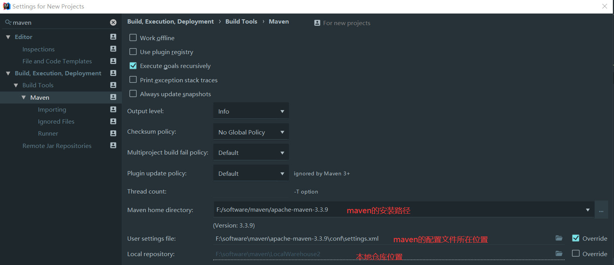
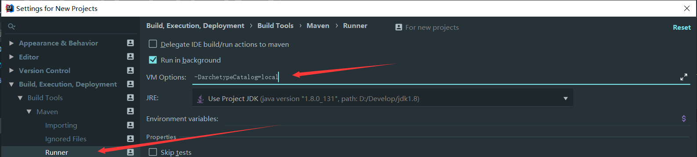

Maven
maven是什么?
Maven 是一个项目管理工具，可以对 Java 项目进行构建、依赖管理。
为什么使用maven?
在之前的项目中,每次都需要先导入很多jar包,并且出现依赖冲突没有直观显示,使用maven后不用在手动导入很多jar包,
只需要引入jar在仓库对应的坐标即可,大大减小了项目的体积
下载与配置
下载地址:https://maven.apache.org/download.cgi windows环境下选择二进制压缩包进行下载
配置环境变量:
可以先在系统变量创建一个MAVEN_HOME指向maven安装路径,然后在path中添加此变量,并指向bin目
录%MAVEN_HOME%\bin,这样做的目的是如果maven换了安装目录只需要更改MAVEN_HOME,而不需要更改path,避免出
现其他问题,配置好后使用mvn - v 命令查看版本
阿里镜像
主要的配置文件在conf文件夹中的settings.xml,其默认使用的是maven的中央仓库,为了解决国内下载速度慢的情况
找到mirrors标签添加
<mirror>
<id>alimaven</id>
<mirrorOf>central</mirrorOf>
<name>aliyun maven</name>
<url>http://maven.aliyun.com/nexus/content/groups/public/</url>
</mirror>
maven安装后会有一个默认的仓库在c盘用户的文件夹.m2,更改其默认的仓库
本地仓库
在settings.xml中配置自定义本地仓库的位置
<localRepository>仓库所在磁盘路径</localRepository>
远程仓库
使用Nexus搭建maven私服
需要配置认证信息,在maven的settings.xml文件的serves节点添加
<server>
<id>nexus-releases</id>
<username>admin</username>
<password>admin123</password>
</server>
<server>
<id>nexus-snapshots</id>
<username>admin</username>
<password>admin123</password>
</server>
自动化部署,上传
命令 : mvn deploy
<!-- 管理版本的作用,和parent节点的作用类似 -->
<distributionManagement>
<repository>
<id>nexus-releases</id>
<name>Nexus Release Repository</name>
<url>http://127.0.0.1:8081/repository/maven-releases/</url>
</repository>
<snapshotRepository>
<id>nexus-snapshots</id>
<name>Nexus Snapshot Repository</name>
<url>http://127.0.0.1:8081/repository/maven-snapshots/</url>
</snapshotRepository>
</distributionManagement>
配置代理仓库
修改url地址即可
<repositories>
<repository>
<id>nexus</id>
<name>Nexus Repository</name>
<url>http://127.0.0.1:8081/repository/maven-public/</url>
<snapshots>
<enabled>true</enabled>
</snapshots>
<releases>
<enabled>true</enabled>
</releases>
</repository>
</repositories>
<pluginRepositories>
<pluginRepository>
<id>nexus</id>
<name>Nexus Plugin Repository</name>
<url>http://127.0.0.1:8081/repository/maven-public/</url>
<snapshots>
<enabled>true</enabled>
</snapshots>
<releases>
<enabled>true</enabled>
</releases>
</pluginRepository>
</pluginRepositories>
IDEA中配置maven
点击左上角File ---> other-settings ---> settings for new projects
搜索maven
设置创建新项目时的配置,更改本项目的配置在File ---> setting ---> 中搜索maven做同样的配置

解决IDEA中创建项目慢,因为默认使用的是远程创建 切换成使用本地的配置文件创建项目

入门使用
坐标
以下面的依赖作为示例解释坐标的概念
其实就是该jar(依赖)在仓库的位置 仓库所在磁盘位置\org\projectlombok\lombok\1.18.10
<dependency>
<groupId>org.projectlombok</groupId> 组名
<artifactId>lombok</artifactId> 模块名
<version>1.18.10</version> 版本号
</dependency>
version后缀
SNAPSHOT：快照版本,此jar包没有经过测试,很多bug
RC：此jar包经过了充分测试，但是可能还有很多bug
BETA：上线前的测试版本
RELEASE：正式版
生命周期
| 阶段 | 处理 | 描述 |
|---|---|---|
| 验证 validate | 验证项目 | 验证项目是否正确且所有必须信息是可用的 |
| 编译 compile | 执行编译 | 源代码编译在此阶段完成 |
| 测试 Test | 测试 | 使用适当的单元测试框架（例如JUnit）运行测试。 |
| 包装 package | 打包 | 创建JAR/WAR包如在 pom.xml 中定义提及的包 |
| 检查 verify | 检查 | 对集成测试的结果进行检查，以保证质量达标 |
| 安装 install | 安装 | 安装打包的项目到本地仓库，以供其他项目使用 |
| 部署 deploy | 部署 | 拷贝最终的工程包到远程仓库中，以共享给其他开发人员和工程 |
手动安装jar包
<dependency>
<groupId>com.aspose.words</groupId>
<artifactId>aspose-words-jdk16</artifactId>
<version>7.0.0</version>
</dependency>
mvn install:install-file -Dfile=jar包的位置（源文件） -DgroupId=上面的groupId -DartifactId=上面的artifactId -Dversion=上面的version -Dpackaging=jar
mvn install:install-file -Dfile=F:\下载\谷歌下载\aspose.words.jdk16-7.0.0.jar -DgroupId=com.aspose.words -DartifactId=aspose-words-jdk16 -Dversion=7.0.0 -Dpackaging=jar
pom配置微服务下多环境
<profiles>
<!-- 环境一 -->
<profile>
<!-- tao-本地开发环境一 -->
<id>tao</id>
<properties>
<env>dev</env>
<nacosServerAddr>http://192.168.91.50:8848</nacosServerAddr>
<nacosNamespace>4339db89-ce06-44e3-9e14-b4aed9b13c80</nacosNamespace>
</properties>
<activation>
<activeByDefault>true</activeByDefault>
</activation>
</profile>
</profiles>
# Spring
spring:
application:
# 应用名称
name:
profiles:
# 环境配置
active: @env@
cloud:
nacos:
discovery:
# 服务注册地址
server-addr: @nacosServerAddr@
namespace: @nacosNamespace@
config:
# 配置中心地址
server-addr: @nacosServerAddr@
namespace: @nacosNamespace@
# 配置文件格式
file-extension: yml
# 共享配置
shared-configs:
- application-${spring.profiles.active}.${spring.cloud.nacos.config.file-extension}
多层级时单独打包
# 打二级包
mvn clean package -pl food-auth -am
# 打三级包
mvn clean package -pl .\food-modules\food-file\ -am
pom文件常用标签
<!-- 指定父依赖 -->
<parent>
<groupId>org.springframework.boot</groupId>
<artifactId>spring-boot-starter-parent</artifactId>
<version>2.2.1.RELEASE</version>
</parent>
<!-- 打包后的类型 jar war pom -->
<packaging>jar</packaging>
<modules>
<module>子模块</module>
</modules>
<!-- 统一版本维护 -->
<properties>
<project.build.sourceEncoding>UTF-8</project.build.sourceEncoding>
<project.reporting.outputEncoding>UTF-8</project.reporting.outputEncoding>
<java.version>1.8</java.version>
<mysql.version>5.1.32</mysql.version>
</properties>
<!-- 引入依赖 -->
<dependencies>
<!-- 因为该依赖在父依赖中定义了其版本,可以省略 -->
<dependency>
<groupId>org.springframework.boot</groupId>
<artifactId>spring-boot-starter-web</artifactId>
</dependency>
<!-- mysql驱动 -->
<dependency>
<groupId>mysql</groupId>
<artifactId>mysql-connector-java</artifactId>
<version>${mysql.version}</version>
</dependency>
<!-- 这里拿两个依赖演示依赖冲突,当两个依赖同时依赖 -->
<!-- 通用mapper -->
<dependency>
<groupId>tk.mybatis</groupId>
<artifactId>mapper</artifactId>
<version>3.5.2</version>
<!-- Jpa 和 mybatis 都依赖该包会出现异常 -->
<!-- 异常信息:Correct the classpath of your application so that it contains a single, compatible version of javax.persistence.spi.PersistenceUnitInfo -->
<exclusions>
<exclusion>
<groupId>javax.persistence</groupId>
<artifactId>persistence-api</artifactId>
</exclusion>
</exclusions>
</dependency>
</dependencies>
依赖的生命周期
- compile : 编译范围,默认值
- provided : 打包时需要,例如写servlet程序时需要依赖servlet-api进行编译,但是运行在tomcat容器中有相同的依赖会引起依赖冲突,此时需要添加此注解
- runtime : 仅参与项目的运行阶段,例如mysql的驱动
- test : 该依赖仅参与测试相关的内容,例如junit
- system : 使用的非maven仓库中依赖,引用的是本地文件系统的jar
注意事项
解决依赖下载不完全的问题
创建.bat文件,更改目录完毕后,双击运行
set REPOSITORY_PATH=指向maven仓库
rem 正在搜索...
for /f "delims=" %%i in ('dir /b /s "%REPOSITORY_PATH%\*lastUpdated*"') do (
del /s /q %%i
)
rem 搜索完毕
pause
install打包到本地仓库
将项目封装为工具类时,应该打包成为一个不可运行的jar,所以需要将下方插件依赖删除
<plugin>
<groupId>org.springframework.boot</groupId>
<artifactId>spring-boot-maven-plugin</artifactId>
</plugin>
pom标签大全详解
<project xmlns="http://maven.apache.org/POM/4.0.0" xmlns:xsi="http://www.w3.org/2001/XMLSchema-instance"
xsi:schemaLocation="http://maven.apache.org/POM/4.0.0http://maven.apache.org/maven-v4_0_0.xsd">
<!--父项目的坐标。如果项目中没有规定某个元素的值，那么父项目中的对应值即为项目的默认值。 坐标包括group ID，artifact ID和
version。 -->
<parent>
<!--被继承的父项目的构件标识符 -->
<artifactId />
<!--被继承的父项目的全球唯一标识符 -->
<groupId />
<!--被继承的父项目的版本 -->
<version />
<!-- 父项目的pom.xml文件的相对路径。相对路径允许你选择一个不同的路径。默认值是../pom.xml。Maven首先在构建当前项目的地方寻找父项
目的pom，其次在文件系统的这个位置（relativePath位置），然后在本地仓库，最后在远程仓库寻找父项目的pom。 -->
<relativePath />
</parent>
<!--声明项目描述符遵循哪一个POM模型版本。模型本身的版本很少改变，虽然如此，但它仍然是必不可少的，这是为了当Maven引入了新的特性或者其他模型变更的时候，确保稳定性。 -->
<modelVersion>4.0.0</modelVersion>
<!--项目的全球唯一标识符，通常使用全限定的包名区分该项目和其他项目。并且构建时生成的路径也是由此生成， 如com.mycompany.app生成的相对路径为：/com/mycompany/app -->
<groupId>asia.banseon</groupId>
<!-- 构件的标识符，它和group ID一起唯一标识一个构件。换句话说，你不能有两个不同的项目拥有同样的artifact ID和groupID；在某个
特定的group ID下，artifact ID也必须是唯一的。构件是项目产生的或使用的一个东西，Maven为项目产生的构件包括：JARs，源 码，二进制发布和WARs等。 -->
<artifactId>banseon-maven2</artifactId>
<!--项目产生的构件类型，例如jar、war、ear、pom。插件可以创建他们自己的构件类型，所以前面列的不是全部构件类型 -->
<packaging>jar</packaging>
<!--项目当前版本，格式为:主版本.次版本.增量版本-限定版本号 -->
<version>1.0-SNAPSHOT</version>
<!--项目的名称, Maven产生的文档用 -->
<name>banseon-maven</name>
<!--项目主页的URL, Maven产生的文档用 -->
<url>http://www.baidu.com/banseon</url>
<!-- 项目的详细描述, Maven 产生的文档用。 当这个元素能够用HTML格式描述时（例如，CDATA中的文本会被解析器忽略，就可以包含HTML标
签）， 不鼓励使用纯文本描述。如果你需要修改产生的web站点的索引页面，你应该修改你自己的索引页文件，而不是调整这里的文档。 -->
<description>A maven project to study maven.</description>
<!--描述了这个项目构建环境中的前提条件。 -->
<prerequisites>
<!--构建该项目或使用该插件所需要的Maven的最低版本 -->
<maven />
</prerequisites>
<!--项目的问题管理系统(Bugzilla, Jira, Scarab,或任何你喜欢的问题管理系统)的名称和URL，本例为 jira -->
<issueManagement>
<!--问题管理系统（例如jira）的名字， -->
<system>jira</system>
<!--该项目使用的问题管理系统的URL -->
<url>http://jira.baidu.com/banseon</url>
</issueManagement>
<!--项目持续集成信息 -->
<ciManagement>
<!--持续集成系统的名字，例如continuum -->
<system />
<!--该项目使用的持续集成系统的URL（如果持续集成系统有web接口的话）。 -->
<url />
<!--构建完成时，需要通知的开发者/用户的配置项。包括被通知者信息和通知条件（错误，失败，成功，警告） -->
<notifiers>
<!--配置一种方式，当构建中断时，以该方式通知用户/开发者 -->
<notifier>
<!--传送通知的途径 -->
<type />
<!--发生错误时是否通知 -->
<sendOnError />
<!--构建失败时是否通知 -->
<sendOnFailure />
<!--构建成功时是否通知 -->
<sendOnSuccess />
<!--发生警告时是否通知 -->
<sendOnWarning />
<!--不赞成使用。通知发送到哪里 -->
<address />
<!--扩展配置项 -->
<configuration />
</notifier>
</notifiers>
</ciManagement>
<!--项目创建年份，4位数字。当产生版权信息时需要使用这个值。 -->
<inceptionYear />
<!--项目相关邮件列表信息 -->
<mailingLists>
<!--该元素描述了项目相关的所有邮件列表。自动产生的网站引用这些信息。 -->
<mailingList>
<!--邮件的名称 -->
<name>Demo</name>
<!--发送邮件的地址或链接，如果是邮件地址，创建文档时，mailto: 链接会被自动创建 -->
<post>banseon@126.com</post>
<!--订阅邮件的地址或链接，如果是邮件地址，创建文档时，mailto: 链接会被自动创建 -->
<subscribe>banseon@126.com</subscribe>
<!--取消订阅邮件的地址或链接，如果是邮件地址，创建文档时，mailto: 链接会被自动创建 -->
<unsubscribe>banseon@126.com</unsubscribe>
<!--你可以浏览邮件信息的URL -->
<archive>http:/hi.baidu.com/banseon/demo/dev/</archive>
</mailingList>
</mailingLists>
<!--项目开发者列表 -->
<developers>
<!--某个项目开发者的信息 -->
<developer>
<!--SCM里项目开发者的唯一标识符 -->
<id>HELLO WORLD</id>
<!--项目开发者的全名 -->
<name>banseon</name>
<!--项目开发者的email -->
<email>banseon@126.com</email>
<!--项目开发者的主页的URL -->
<url />
<!--项目开发者在项目中扮演的角色，角色元素描述了各种角色 -->
<roles>
<role>Project Manager</role>
<role>Architect</role>
</roles>
<!--项目开发者所属组织 -->
<organization>demo</organization>
<!--项目开发者所属组织的URL -->
<organizationUrl>http://hi.baidu.com/banseon</organizationUrl>
<!--项目开发者属性，如即时消息如何处理等 -->
<properties>
<dept>No</dept>
</properties>
<!--项目开发者所在时区， -11到12范围内的整数。 -->
<timezone>-5</timezone>
</developer>
</developers>
<!--项目的其他贡献者列表 -->
<contributors>
<!--项目的其他贡献者。参见developers/developer元素 -->
<contributor>
<name />
<email />
<url />
<organization />
<organizationUrl />
<roles />
<timezone />
<properties />
</contributor>
</contributors>
<!--该元素描述了项目所有License列表。 应该只列出该项目的license列表，不要列出依赖项目的 license列表。如果列出多个license，用户可以选择它们中的一个而不是接受所有license。 -->
<licenses>
<!--描述了项目的license，用于生成项目的web站点的license页面，其他一些报表和validation也会用到该元素。 -->
<license>
<!--license用于法律上的名称 -->
<name>Apache 2</name>
<!--官方的license正文页面的URL -->
<url>http://www.baidu.com/banseon/LICENSE-2.0.txt</url>
<!--项目分发的主要方式： repo，可以从Maven库下载 manual， 用户必须手动下载和安装依赖 -->
<distribution>repo</distribution>
<!--关于license的补充信息 -->
<comments>A business-friendly OSS license</comments>
</license>
</licenses>
<!--SCM(Source Control Management)标签允许你配置你的代码库，供Maven web站点和其它插件使用。 -->
<scm>
<!--SCM的URL,该URL描述了版本库和如何连接到版本库。欲知详情，请看SCMs提供的URL格式和列表。该连接只读。 -->
<connection>
scm:svn:http://svn.baidu.com/banseon/maven/banseon/banseon-maven2-trunk(dao-trunk)
</connection>
<!--给开发者使用的，类似connection元素。即该连接不仅仅只读 -->
<developerConnection>
scm:svn:http://svn.baidu.com/banseon/maven/banseon/dao-trunk
</developerConnection>
<!--当前代码的标签，在开发阶段默认为HEAD -->
<tag />
<!--指向项目的可浏览SCM库（例如ViewVC或者Fisheye）的URL。 -->
<url>http://svn.baidu.com/banseon</url>
</scm>
<!--描述项目所属组织的各种属性。Maven产生的文档用 -->
<organization>
<!--组织的全名 -->
<name>demo</name>
<!--组织主页的URL -->
<url>http://www.baidu.com/banseon</url>
</organization>
<!--构建项目需要的信息 -->
<build>
<!--该元素设置了项目源码目录，当构建项目的时候，构建系统会编译目录里的源码。该路径是相对于pom.xml的相对路径。 -->
<sourceDirectory />
<!--该元素设置了项目脚本源码目录，该目录和源码目录不同：绝大多数情况下，该目录下的内容 会被拷贝到输出目录(因为脚本是被解释的，而不是被编译的)。 -->
<scriptSourceDirectory />
<!--该元素设置了项目单元测试使用的源码目录，当测试项目的时候，构建系统会编译目录里的源码。该路径是相对于pom.xml的相对路径。 -->
<testSourceDirectory />
<!--被编译过的应用程序class文件存放的目录。 -->
<outputDirectory />
<!--被编译过的测试class文件存放的目录。 -->
<testOutputDirectory />
<!--使用来自该项目的一系列构建扩展 -->
<extensions>
<!--描述使用到的构建扩展。 -->
<extension>
<!--构建扩展的groupId -->
<groupId />
<!--构建扩展的artifactId -->
<artifactId />
<!--构建扩展的版本 -->
<version />
</extension>
</extensions>
<!--当项目没有规定目标（Maven2 叫做阶段）时的默认值 -->
<defaultGoal />
<!--这个元素描述了项目相关的所有资源路径列表，例如和项目相关的属性文件，这些资源被包含在最终的打包文件里。 -->
<resources>
<!--这个元素描述了项目相关或测试相关的所有资源路径 -->
<resource>
<!-- 描述了资源的目标路径。该路径相对target/classes目录（例如${project.build.outputDirectory}）。举个例
子，如果你想资源在特定的包里(org.apache.maven.messages)，你就必须该元素设置为org/apache/maven /messages。然而，如果你只是想把资源放到源码目录结构里，就不需要该配置。 -->
<targetPath />
<!--是否使用参数值代替参数名。参数值取自properties元素或者文件里配置的属性，文件在filters元素里列出。 -->
<filtering />
<!--描述存放资源的目录，该路径相对POM路径 -->
<directory />
<!--包含的模式列表，例如**/*.xml. -->
<includes />
<!--排除的模式列表，例如**/*.xml -->
<excludes />
</resource>
</resources>
<!--这个元素描述了单元测试相关的所有资源路径，例如和单元测试相关的属性文件。 -->
<testResources>
<!--这个元素描述了测试相关的所有资源路径，参见build/resources/resource元素的说明 -->
<testResource>
<targetPath />
<filtering />
<directory />
<includes />
<excludes />
</testResource>
</testResources>
<!--构建产生的所有文件存放的目录 -->
<directory />
<!--产生的构件的文件名，默认值是${artifactId}-${version}。 -->
<finalName />
<!--当filtering开关打开时，使用到的过滤器属性文件列表 -->
<filters />
<!--子项目可以引用的默认插件信息。该插件配置项直到被引用时才会被解析或绑定到生命周期。给定插件的任何本地配置都会覆盖这里的配置 -->
<pluginManagement>
<!--使用的插件列表 。 -->
<plugins>
<!--plugin元素包含描述插件所需要的信息。 -->
<plugin>
<!--插件在仓库里的group ID -->
<groupId />
<!--插件在仓库里的artifact ID -->
<artifactId />
<!--被使用的插件的版本（或版本范围） -->
<version />
<!--是否从该插件下载Maven扩展（例如打包和类型处理器），由于性能原因，只有在真需要下载时，该元素才被设置成enabled。 -->
<extensions />
<!--在构建生命周期中执行一组目标的配置。每个目标可能有不同的配置。 -->
<executions>
<!--execution元素包含了插件执行需要的信息 -->
<execution>
<!--执行目标的标识符，用于标识构建过程中的目标，或者匹配继承过程中需要合并的执行目标 -->
<id />
<!--绑定了目标的构建生命周期阶段，如果省略，目标会被绑定到源数据里配置的默认阶段 -->
<phase />
<!--配置的执行目标 -->
<goals />
<!--配置是否被传播到子POM -->
<inherited />
<!--作为DOM对象的配置 -->
<configuration />
</execution>
</executions>
<!--项目引入插件所需要的额外依赖 -->
<dependencies>
<!--参见dependencies/dependency元素 -->
<dependency>
......
</dependency>
</dependencies>
<!--任何配置是否被传播到子项目 -->
<inherited />
<!--作为DOM对象的配置 -->
<configuration />
</plugin>
</plugins>
</pluginManagement>
<!--使用的插件列表 -->
<plugins>
<!--参见build/pluginManagement/plugins/plugin元素 -->
<plugin>
<groupId />
<artifactId />
<version />
<extensions />
<executions>
<execution>
<id />
<phase />
<goals />
<inherited />
<configuration />
</execution>
</executions>
<dependencies>
<!--参见dependencies/dependency元素 -->
<dependency>
......
</dependency>
</dependencies>
<goals />
<inherited />
<configuration />
</plugin>
</plugins>
</build>
<!--在列的项目构建profile，如果被激活，会修改构建处理 -->
<profiles>
<!--根据环境参数或命令行参数激活某个构建处理 -->
<profile>
<!--构建配置的唯一标识符。即用于命令行激活，也用于在继承时合并具有相同标识符的profile。 -->
<id />
<!--自动触发profile的条件逻辑。Activation是profile的开启钥匙。profile的力量来自于它 能够在某些特定的环境中自动使用某些特定的值；这些环境通过activation元素指定。activation元素并不是激活profile的唯一方式。 -->
<activation>
<!--profile默认是否激活的标志 -->
<activeByDefault />
<!--当匹配的jdk被检测到，profile被激活。例如，1.4激活JDK1.4，1.4.0_2，而!1.4激活所有版本不是以1.4开头的JDK。 -->
<jdk />
<!--当匹配的操作系统属性被检测到，profile被激活。os元素可以定义一些操作系统相关的属性。 -->
<os>
<!--激活profile的操作系统的名字 -->
<name>Windows XP</name>
<!--激活profile的操作系统所属家族(如 'windows') -->
<family>Windows</family>
<!--激活profile的操作系统体系结构 -->
<arch>x86</arch>
<!--激活profile的操作系统版本 -->
<version>5.1.2600</version>
</os>
<!--如果Maven检测到某一个属性（其值可以在POM中通过${名称}引用），其拥有对应的名称和值，Profile就会被激活。如果值 字段是空的，那么存在属性名称字段就会激活profile，否则按区分大小写方式匹配属性值字段 -->
<property>
<!--激活profile的属性的名称 -->
<name>mavenVersion</name>
<!--激活profile的属性的值 -->
<value>2.0.3</value>
</property>
<!--提供一个文件名，通过检测该文件的存在或不存在来激活profile。missing检查文件是否存在，如果不存在则激活 profile。另一方面，exists则会检查文件是否存在，如果存在则激活profile。 -->
<file>
<!--如果指定的文件存在，则激活profile。 -->
<exists>/usr/local/hudson/hudson-home/jobs/maven-guide-zh-to-production/workspace/
</exists>
<!--如果指定的文件不存在，则激活profile。 -->
<missing>/usr/local/hudson/hudson-home/jobs/maven-guide-zh-to-production/workspace/
</missing>
</file>
</activation>
<!--构建项目所需要的信息。参见build元素 -->
<build>
<defaultGoal />
<resources>
<resource>
<targetPath />
<filtering />
<directory />
<includes />
<excludes />
</resource>
</resources>
<testResources>
<testResource>
<targetPath />
<filtering />
<directory />
<includes />
<excludes />
</testResource>
</testResources>
<directory />
<finalName />
<filters />
<pluginManagement>
<plugins>
<!--参见build/pluginManagement/plugins/plugin元素 -->
<plugin>
<groupId />
<artifactId />
<version />
<extensions />
<executions>
<execution>
<id />
<phase />
<goals />
<inherited />
<configuration />
</execution>
</executions>
<dependencies>
<!--参见dependencies/dependency元素 -->
<dependency>
......
</dependency>
</dependencies>
<goals />
<inherited />
<configuration />
</plugin>
</plugins>
</pluginManagement>
<plugins>
<!--参见build/pluginManagement/plugins/plugin元素 -->
<plugin>
<groupId />
<artifactId />
<version />
<extensions />
<executions>
<execution>
<id />
<phase />
<goals />
<inherited />
<configuration />
</execution>
</executions>
<dependencies>
<!--参见dependencies/dependency元素 -->
<dependency>
......
</dependency>
</dependencies>
<goals />
<inherited />
<configuration />
</plugin>
</plugins>
</build>
<!--模块（有时称作子项目） 被构建成项目的一部分。列出的每个模块元素是指向该模块的目录的相对路径 -->
<modules />
<!--发现依赖和扩展的远程仓库列表。 -->
<repositories>
<!--参见repositories/repository元素 -->
<repository>
<releases>
<enabled />
<updatePolicy />
<checksumPolicy />
</releases>
<snapshots>
<enabled />
<updatePolicy />
<checksumPolicy />
</snapshots>
<id />
<name />
<url />
<layout />
</repository>
</repositories>
<!--发现插件的远程仓库列表，这些插件用于构建和报表 -->
<pluginRepositories>
<!--包含需要连接到远程插件仓库的信息.参见repositories/repository元素 -->
<pluginRepository>
<releases>
<enabled />
<updatePolicy />
<checksumPolicy />
</releases>
<snapshots>
<enabled />
<updatePolicy />
<checksumPolicy />
</snapshots>
<id />
<name />
<url />
<layout />
</pluginRepository>
</pluginRepositories>
<!--该元素描述了项目相关的所有依赖。 这些依赖组成了项目构建过程中的一个个环节。它们自动从项目定义的仓库中下载。要获取更多信息，请看项目依赖机制。 -->
<dependencies>
<!--参见dependencies/dependency元素 -->
<dependency>
......
</dependency>
</dependencies>
<!--不赞成使用. 现在Maven忽略该元素. -->
<reports />
<!--该元素包括使用报表插件产生报表的规范。当用户执行"mvn site"，这些报表就会运行。 在页面导航栏能看到所有报表的链接。参见reporting元素 -->
<reporting>
......
</reporting>
<!--参见dependencyManagement元素 -->
<dependencyManagement>
<dependencies>
<!--参见dependencies/dependency元素 -->
<dependency>
......
</dependency>
</dependencies>
</dependencyManagement>
<!--参见distributionManagement元素 -->
<distributionManagement>
......
</distributionManagement>
<!--参见properties元素 -->
<properties />
</profile>
</profiles>
<!--模块（有时称作子项目） 被构建成项目的一部分。列出的每个模块元素是指向该模块的目录的相对路径 -->
<modules />
<!--发现依赖和扩展的远程仓库列表。 -->
<repositories>
<!--包含需要连接到远程仓库的信息 -->
<repository>
<!--如何处理远程仓库里发布版本的下载 -->
<releases>
<!--true或者false表示该仓库是否为下载某种类型构件（发布版，快照版）开启。 -->
<enabled />
<!--该元素指定更新发生的频率。Maven会比较本地POM和远程POM的时间戳。这里的选项是：always（一直），daily（默认，每日），interval：X（这里X是以分钟为单位的时间间隔），或者never（从不）。 -->
<updatePolicy />
<!--当Maven验证构件校验文件失败时该怎么做：ignore（忽略），fail（失败），或者warn（警告）。 -->
<checksumPolicy />
</releases>
<!-- 如何处理远程仓库里快照版本的下载。有了releases和snapshots这两组配置，POM就可以在每个单独的仓库中，为每种类型的构件采取不同的
策略。例如，可能有人会决定只为开发目的开启对快照版本下载的支持。参见repositories/repository/releases元素 -->
<snapshots>
<enabled />
<updatePolicy />
<checksumPolicy />
</snapshots>
<!--远程仓库唯一标识符。可以用来匹配在settings.xml文件里配置的远程仓库 -->
<id>banseon-repository-proxy</id>
<!--远程仓库名称 -->
<name>banseon-repository-proxy</name>
<!--远程仓库URL，按protocol://hostname/path形式 -->
<url>http://192.168.1.169:9999/repository/</url>
<!-- 用于定位和排序构件的仓库布局类型-可以是default（默认）或者legacy（遗留）。Maven 2为其仓库提供了一个默认的布局；然
而，Maven 1.x有一种不同的布局。我们可以使用该元素指定布局是default（默认）还是legacy（遗留）。 -->
<layout>default</layout>
</repository>
</repositories>
<!--发现插件的远程仓库列表，这些插件用于构建和报表 -->
<pluginRepositories>
<!--包含需要连接到远程插件仓库的信息.参见repositories/repository元素 -->
<pluginRepository>
......
</pluginRepository>
</pluginRepositories>
<!--该元素描述了项目相关的所有依赖。 这些依赖组成了项目构建过程中的一个个环节。它们自动从项目定义的仓库中下载。要获取更多信息，请看项目依赖机制。 -->
<dependencies>
<dependency>
<!--依赖的group ID -->
<groupId>org.apache.maven</groupId>
<!--依赖的artifact ID -->
<artifactId>maven-artifact</artifactId>
<!--依赖的版本号。 在Maven 2里, 也可以配置成版本号的范围。 -->
<version>3.8.1</version>
<!-- 依赖类型，默认类型是jar。它通常表示依赖的文件的扩展名，但也有例外。一个类型可以被映射成另外一个扩展名或分类器。类型经常和使用的打包方式对应，
尽管这也有例外。一些类型的例子：jar，war，ejb-client和test-jar。如果设置extensions为 true，就可以在 plugin里定义新的类型。所以前面的类型的例子不完整。 -->
<type>jar</type>
<!-- 依赖的分类器。分类器可以区分属于同一个POM，但不同构建方式的构件。分类器名被附加到文件名的版本号后面。例如，如果你想要构建两个单独的构件成
JAR，一个使用Java 1.4编译器，另一个使用Java 6编译器，你就可以使用分类器来生成两个单独的JAR构件。 -->
<classifier></classifier>
<!--依赖范围。在项目发布过程中，帮助决定哪些构件被包括进来。欲知详情请参考依赖机制。 - compile ：默认范围，用于编译 - provided：类似于编译，但支持你期待jdk或者容器提供，类似于classpath
- runtime: 在执行时需要使用 - test: 用于test任务时使用 - system: 需要外在提供相应的元素。通过systemPath来取得
- systemPath: 仅用于范围为system。提供相应的路径 - optional: 当项目自身被依赖时，标注依赖是否传递。用于连续依赖时使用 -->
<scope>test</scope>
<!--仅供system范围使用。注意，不鼓励使用这个元素，并且在新的版本中该元素可能被覆盖掉。该元素为依赖规定了文件系统上的路径。需要绝对路径而不是相对路径。推荐使用属性匹配绝对路径，例如${java.home}。 -->
<systemPath></systemPath>
<!--当计算传递依赖时， 从依赖构件列表里，列出被排除的依赖构件集。即告诉maven你只依赖指定的项目，不依赖项目的依赖。此元素主要用于解决版本冲突问题 -->
<exclusions>
<exclusion>
<artifactId>spring-core</artifactId>
<groupId>org.springframework</groupId>
</exclusion>
</exclusions>
<!--可选依赖，如果你在项目B中把C依赖声明为可选，你就需要在依赖于B的项目（例如项目A）中显式的引用对C的依赖。可选依赖阻断依赖的传递性。 -->
<optional>true</optional>
</dependency>
</dependencies>
<!--不赞成使用. 现在Maven忽略该元素. -->
<reports></reports>
<!--该元素描述使用报表插件产生报表的规范。当用户执行"mvn site"，这些报表就会运行。 在页面导航栏能看到所有报表的链接。 -->
<reporting>
<!--true，则，网站不包括默认的报表。这包括"项目信息"菜单中的报表。 -->
<excludeDefaults />
<!--所有产生的报表存放到哪里。默认值是${project.build.directory}/site。 -->
<outputDirectory />
<!--使用的报表插件和他们的配置。 -->
<plugins>
<!--plugin元素包含描述报表插件需要的信息 -->
<plugin>
<!--报表插件在仓库里的group ID -->
<groupId />
<!--报表插件在仓库里的artifact ID -->
<artifactId />
<!--被使用的报表插件的版本（或版本范围） -->
<version />
<!--任何配置是否被传播到子项目 -->
<inherited />
<!--报表插件的配置 -->
<configuration />
<!--一组报表的多重规范，每个规范可能有不同的配置。一个规范（报表集）对应一个执行目标 。例如，有1，2，3，4，5，6，7，8，9个报表。1，2，5构成A报表集，对应一个执行目标。2，5，8构成B报表集，对应另一个执行目标 -->
<reportSets>
<!--表示报表的一个集合，以及产生该集合的配置 -->
<reportSet>
<!--报表集合的唯一标识符，POM继承时用到 -->
<id />
<!--产生报表集合时，被使用的报表的配置 -->
<configuration />
<!--配置是否被继承到子POMs -->
<inherited />
<!--这个集合里使用到哪些报表 -->
<reports />
</reportSet>
</reportSets>
</plugin>
</plugins>
</reporting>
<!-- 继承自该项目的所有子项目的默认依赖信息。这部分的依赖信息不会被立即解析,而是当子项目声明一个依赖（必须描述group ID和 artifact
ID信息），如果group ID和artifact ID以外的一些信息没有描述，则通过group ID和artifact ID 匹配到这里的依赖，并使用这里的依赖信息。 -->
<dependencyManagement>
<dependencies>
<!--参见dependencies/dependency元素 -->
<dependency>
......
</dependency>
</dependencies>
</dependencyManagement>
<!--项目分发信息，在执行mvn deploy后表示要发布的位置。有了这些信息就可以把网站部署到远程服务器或者把构件部署到远程仓库。 -->
<distributionManagement>
<!--部署项目产生的构件到远程仓库需要的信息 -->
<repository>
<!--是分配给快照一个唯一的版本号（由时间戳和构建流水号）？还是每次都使用相同的版本号？参见repositories/repository元素 -->
<uniqueVersion />
<id>banseon-maven2</id>
<name>banseon maven2</name>
<url>file://${basedir}/target/deploy</url>
<layout />
</repository>
<!--构件的快照部署到哪里？如果没有配置该元素，默认部署到repository元素配置的仓库，参见distributionManagement/repository元素 -->
<snapshotRepository>
<uniqueVersion />
<id>banseon-maven2</id>
<name>Banseon-maven2 Snapshot Repository</name>
<url>scp://svn.baidu.com/banseon:/usr/local/maven-snapshot</url>
<layout />
</snapshotRepository>
<!--部署项目的网站需要的信息 -->
<site>
<!--部署位置的唯一标识符，用来匹配站点和settings.xml文件里的配置 -->
<id>banseon-site</id>
<!--部署位置的名称 -->
<name>business api website</name>
<!--部署位置的URL，按protocol://hostname/path形式 -->
<url>
scp://svn.baidu.com/banseon:/var/www/localhost/banseon-web
</url>
</site>
<!--项目下载页面的URL。如果没有该元素，用户应该参考主页。使用该元素的原因是：帮助定位那些不在仓库里的构件（由于license限制）。 -->
<downloadUrl />
<!--如果构件有了新的group ID和artifact ID（构件移到了新的位置），这里列出构件的重定位信息。 -->
<relocation>
<!--构件新的group ID -->
<groupId />
<!--构件新的artifact ID -->
<artifactId />
<!--构件新的版本号 -->
<version />
<!--显示给用户的，关于移动的额外信息，例如原因。 -->
<message />
</relocation>
<!-- 给出该构件在远程仓库的状态。不得在本地项目中设置该元素，因为这是工具自动更新的。有效的值有：none（默认），converted（仓库管理员从
Maven 1 POM转换过来），partner（直接从伙伴Maven 2仓库同步过来），deployed（从Maven 2实例部 署），verified（被核实时正确的和最终的）。 -->
<status />
</distributionManagement>
<!--以值替代名称，Properties可以在整个POM中使用，也可以作为触发条件（见settings.xml配置文件里activation元素的说明）。格式是<name>value</name>。 -->
<properties />
</project>